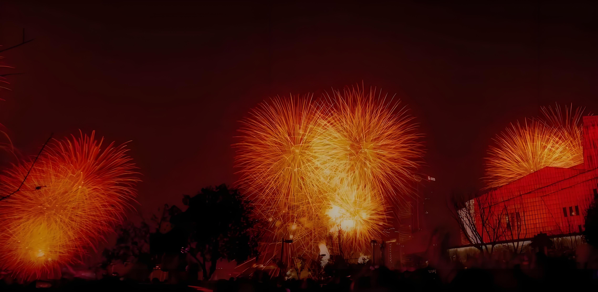
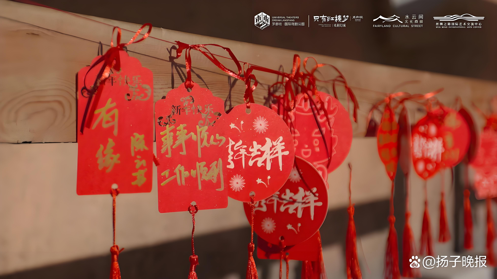
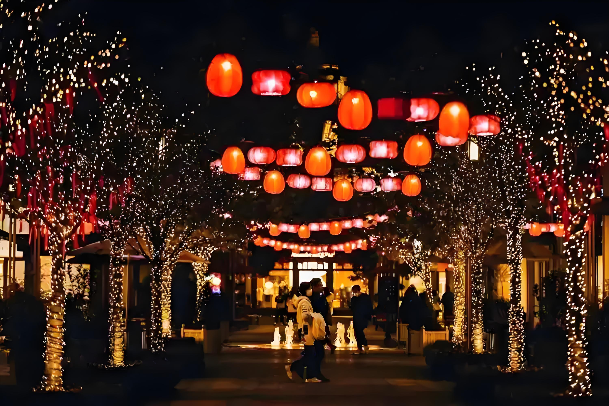

聆听新年第一声钟响，拥抱第一缕阳光，再去看一场奇妙的展览……2025年新年即将到 来，不少人依然选择仪式感满满的跨年方式。各地旅游消费市场活力十足，一系列丰富多彩的活动和有力有 效的惠民举措，将持续激发跨年消费热情。
联动跨年 冰雪迎新
12月31 日晚，京津冀三地将首次联动举办群众跨年倒计时活动，主会场分别设置在北京首钢园、天津南开区鼓楼 广场、河北石家庄正定古城，三地群众将通过连线的方式共同迎接新年。届时，北京首钢园夜景将全面 开启，在群明湖大街、二高炉南路、一高炉、三高炉等多点位设置光影亮化，营造全园跨年迎新的热烈 氛围。
北京全市将有多场跨年活动同步进行。“我们以‘彻夜狂欢、高端酒店、畅滑新年、独有 日出’为跨年亮点，为游客营造浓郁的节日氛围和仪式感，游客不仅能欣赏到八达岭的夜景，同时 也能欣赏一场长城跨年音乐会。”北京八达岭文旅集团相关负责人介绍，在八达岭长城上，游客可 欣赏中国风长城主题摄影作品，参与AI智能应用体验。
沉浸式游园、零点烟花秀、海边迎 日出……跨年夜当晚，江苏省南通市各地跨年活动精彩纷呈。南通市文化广电和旅游局相关负责 人介绍，12月31日当天，启唐城景区16时起免费入园，且通宵不打烊，推出沉浸游戏、非遗 表演、国风市集、篝火晚会等活动，并将在跨年时分开展烟花秀表演、无人机表演，通宵游客 还可在海唐楼、蓬莱茶社欣赏老电影，共同迎接新年“第一缕阳光”。届时，为期3个月的“江海 迎新 暖在通城”2024—2025南通冬季游活动也将启动。
迎接新年，冰雪游热度不减，玩 冰滑雪的方式也更加多样。“我们打算去长白山滑雪，全家还要一起玩冰爬犁、雾凇漂 流。”广州的李女士计划拼假，去东北来一场为期5天的冰雪之旅。
飞猪数据显 示，吉林长白山的“滑雪+温泉”、四川阿坝的“冰川景观+火锅”、黑龙江雪乡的“冰 雪观光+玩乐体验”等相关产品元旦假期预订火爆。
“我们以‘龙江享冰雪，欢喜过大年’为主 题，联合各地文化和旅游部门为在黑龙江跨年的游客精心准备了丰盛的跨年文旅盛宴，包括十大文化演出 活动、十大旅游促消费活动、十大文商旅惠民活动、十大民俗体验活动、十大冰雪赛事活动等，用更加丰 富的冰雪旅游产品、更加好玩的消费体验和更加贴心的服务，为广大市民游客打造氛围感满满的跨年场景 。”黑龙江省文化和旅游厅相关负责人介绍。
演出跨年 国潮迎新

与此同时，文化特色十足的跨年方式热度不断攀升。12月31日，安徽犁桥水镇景区不仅免费对外开 放，还将为游客提供汉服免费换装体验。“我们希望通过这些活动丰富游客体验，营造浓厚的节日氛 围，同时传承中华优秀传统文化，增强大众的民族文化认同感和文化自信，吸引更多人尤其是年轻人关注传统 文化、爱上传统文化。”犁桥水镇总经理朱国正说。
12月31日，深圳“锦绣中华”中国民俗文化村全新 打造的大型国风沉浸式文娱主题区——“锦绣盛市·梦华录”和大型华夏综艺史诗《龙凤舞中华》两大项目将正 式亮相，让深圳元旦春节文旅市场刮起一场“国潮风”。“我们以电视剧《梦华录》中角色‘张好好’为核心IP，联动国风 演艺、古风潮玩、文创好物与主题美食，精心呈上一场‘好好推荐榜’文化消费盛宴。”深圳“锦绣中华”中国民俗文化村相关 负责人介绍，游客进入主题区，即可开启一场“好好拍”“好好吃”“好好喝”“好好玩”“好好看”的国风吃 喝玩乐体验之旅。
各地跨年演出市场也持续升温，掀起新一波热潮。长春市青怡坊雲琅跨年烟 花秀，长春莲花岛影视休闲文化园“跨年狂欢夜”，吉林市跨年烟花秀，珲春市区迎新文艺表演、篝 火晚会……在吉林，30余场演出将“扎堆”上演，跨年烟花秀绝美绽放。此外，12月31日，吉林省“一路 参花”跨年冰雪音乐嘉年华也将在城投南溪里文旅小镇演出，同时，还有“黑神话悟空”园区巡游、激 光秀表演以及跨年烟花秀系列活动。
而在海南，全国各地歌迷将与在三亚举办的张杰2025年跨 年演唱会，来一次甜蜜邂逅。该演唱会预计吸引4万粉丝到场，为三亚元旦旅游市场增添强劲动力 。三亚也将推出“宠粉”优惠活动，涵盖景区、住宿、旅游、免税、美食、交通等多方面，打造“暖粉之城 ”品牌，提升歌迷体验感。
拼假跨年 旅途迎新

同样是看烟花秀、一起跨年，部分游 客则把旅游目的地选在了酒店。住在广州的胡凡提前半个月就预订了香港丽晶酒店的跨年套餐，住在这家酒店可以把 香港维多利亚港的美景尽收眼底，每年跨年夜香港都会在这里举办盛大的烟花表演。虽然2025年元 旦只有一天公共假期，但想要出远门跨年的年轻人已经通过拼假的方式把自己的旅行安排得明明白 白。
春秋旅游副总经理周卫红告诉记者，很多年轻“上班族”选择采取前后拼假的方式拉 长假期。2024年12月28日前后，迎来一波出游高峰，包含长白山、丽江、汕头、昆明、西 双版纳、衡阳、成都、兰州等目的地，5至9日的国内长线游备受青睐。春秋旅游在成都、宁 波、厦门、南宁、广州等地的分社也在这段时间增加了从当地前往泰国的包机旅游产品。
部分游客选择乘坐邮轮旅游跨年，期待在甲板上迎接新年的第一缕晨曦。爱达·魔都号的跨年航次12 月29日从上海出发，6天5晚的航程中这艘国产大型邮轮将带着游客到访日本冲绳，游览八重山 诸岛。
“过境免签政策优化”叠加“跨年”，对想要找氛围感的人们来说充满吸引力。12月31日， 将有30多位来自智利的大学生到上海体验别有特色的中国跨年之旅，品尝充满中国味儿的新年晚 餐是这群学生们最期待的环节。来自波兰和意大利的外国旅行团则会在北京迎接新年的到 来。
值得关注的是，加大产品优惠力度是OTA平台送出的新年祝福。携程旅游近期 上线了“山海同约 新年奇遇”跨年活动，用户可以在专场活动页面领取千元跨年补贴。在同 程旅行“嗨住元旦狂欢夜”活动页面，用户可以领取价值650元的住宿红包。该平台还特别推 荐了北上冰雪游、南下暖冬行和乐园看烟花秀等适合跨年旅程中入住的热门酒店。
（采访组 成员：王玮 张宇 魏彪 邰子君 张磊 朱文文 陈熠瑶 刘玉萍 吴开诗 统稿：范朝慧）